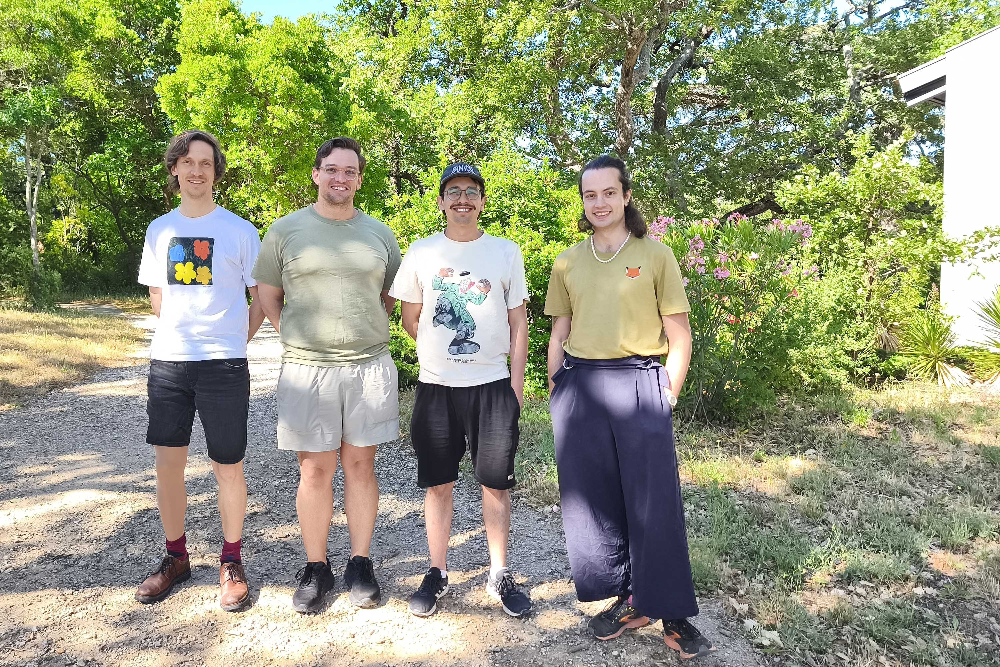

Lecturer (Assistant Professor)
Department of Mathematics and Statistics
Maynooth University, Ireland
Some members of my research group are at the University of Hamburg.
Emmy-Noether Junior Research Group Leader
Bereich Algebra und Zahlentheorie
Fachbereich Mathematik
Universität Hamburg, Germany
Maynooth University:
business Logic House, Room 206 (directions open_in_new,
map open_in_new)
alternate_email math@moeller-sv...
alternate_email sven.moeller@mu... (for internal use)
lock public PGP key (encrypted mails are welcome)
link Link to this webpage: www.moeller-sven.de
phone+353 1 708 3673
mail Mailing address
Universität Hamburg:
business Geomatikum, Room 430 (directions open_in_new,
map open_in_new)
alternate_email math@moeller-sv...
alternate_email sven.moeller@uni-ha... (for internal use)
lock public PGP key (encrypted mails are welcome)
link Link to this webpage: www.moeller-sven.de
phone+49 40 2395 25183
mail Mailing address
I am broadly interested in representation theory, number theory, algebraic geometry and mathematical physics.
In particular, I study vertex algebras, conformal field theory, braided monoidal categories, symplectic singularities, automorphic forms, infinite-dimensional Lie algebras and their connections. Here is a popular science summary of some of my recent work.
See here for my publications (on Google Scholar open_in_new, the arXiv open_in_new).
Together with Arne van Antwerpen I am organising a workshop on vertex algebras, tensor categories and the Yang-Baxter equation in Maynooth, Ireland, September 17 - 18, 2026.
Together with Claudia Alfes I organised a workshop on modular forms and representation theory in Manigod, France, in 2022.
Funded research projects:
Academic CV file_downloadPDF
(last updated: June 2026)
Members of my research group are at the University of Hamburg and at Maynooth University.
Postdocs:
Ph.D. students:
Former members:

The vertex algebra working group in June 2026.
Sven Möller
Department of Mathematics and Statistics
Logic House
Maynooth University
Maynooth
Co. Kildare
Ireland
Sven Möller
Bereich Algebra und Zahlentheorie
Fachbereich Mathematik
Universität Hamburg
Bundesstraße 55
20146 Hamburg
Germany